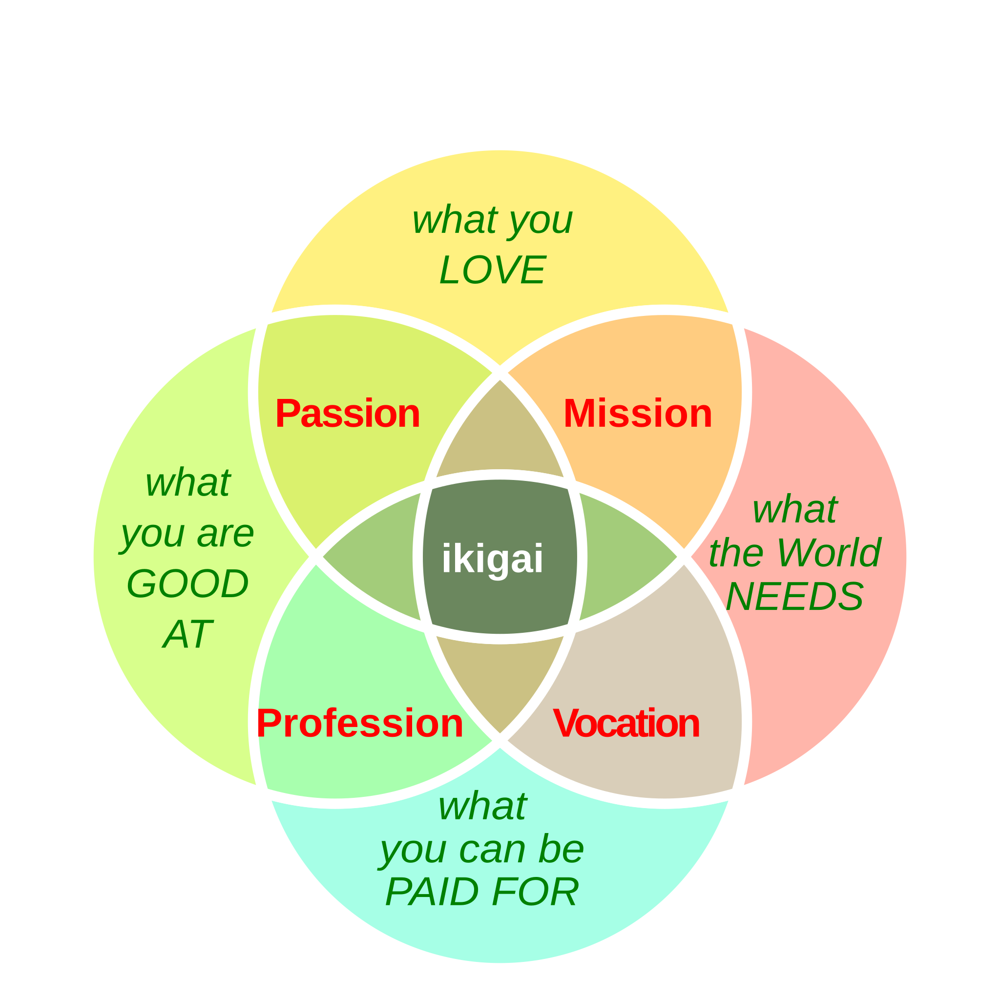

Ikigai#
Intro Blabla
- Perso donc en Francais (citer le livre)
- Scientific article
Objectif Shinkansen#
Note
Pour qu’un rêve ou un désir mérite cette dénomination, il doit sembler impossible a réaliser.
Réinventer la façon dont la science est publié: Donner le pouvoir aux scientifiques de s'auto-publier et de communiquer via un réseau sociale auto-géré hébergé sur internet
- plus d’info, cf Manifesto
Note
- crééer et remplir tableau page 36
You may have understood it by now but I don’t thrive having to fit in a box and this is why I created my own web plateform, to host and make flourish my unique personality and peculiar set of skills. However, I acknowledge the importance to have a framework to organise and build your life and I have choosen the Ikigai method, which can be described as follow:
‣ Profession #
Researcher
Links
Teacher
Links
Content creator
What type of content does researcher / teacher produced ?
Researchers produce a variety of content, scientific articles, power point presentations, talks, reports, grants applications, outreach materials … Teachers also have to write their own materials, lessons, assesments … All of those have to obey to certain templates and a specific format which make them hard to digest by the members of the public.
How, where is it shared ?
- Problem in the way both Research and teaching materials are published, shared and distilled.
Who does this content belongs to ?
Definitely not the researcher, nor the teacher
Today, what is a content creator ?
Blabla
How can we bridge the gap ?
Blabla
Academia needs a Revolution
‣ Passions #
Web Development
Knowledge transfer
Open Source
Arts
Scientific Publication
Collaborations